Every surface on the demo, captured on its own
All 35, at the size they actually render on the page, with the shadow margin included. Tell me the number and I will work on that one instead of guessing.
← the demo · the hash comparison
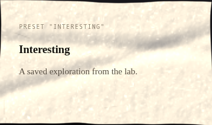
#0 preset "Interesting"359×211 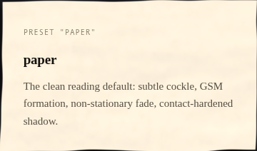
#1 preset "paper"359×211 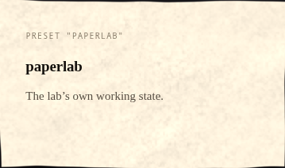
#2 preset "paperlab"359×211 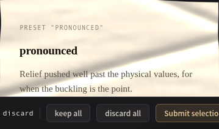
#3 preset "pronounced"359×210 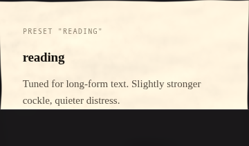
#4 preset "reading"359×210 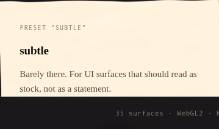
#5 preset "subtle"359×210 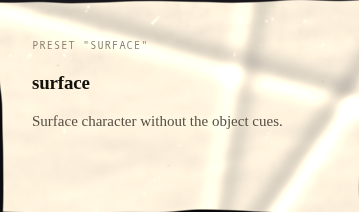
#6 preset "surface"359×211 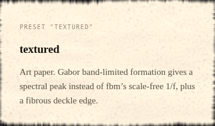
#7 preset "textured"359×211 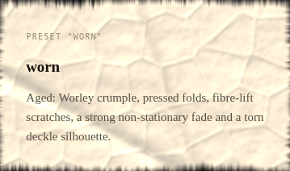
#8 preset "worn"359×211 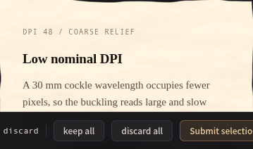
#9 dpi 48 / coarse relief359×211 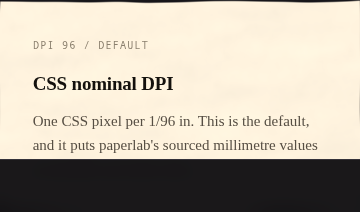
#10 dpi 96 / default359×211 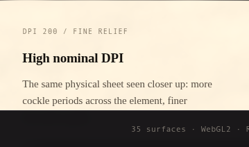
#11 dpi 200 / fine relief359×211 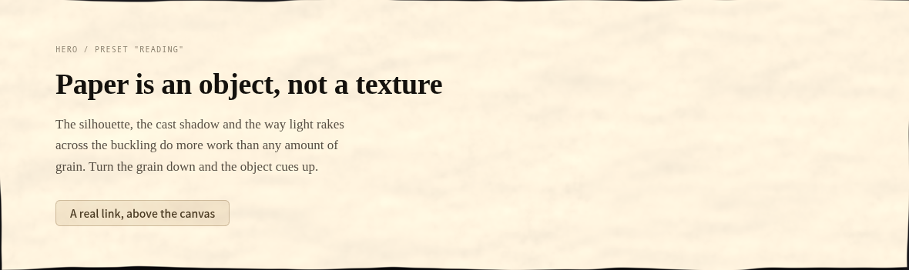
#12 hero / preset "reading"1180×350 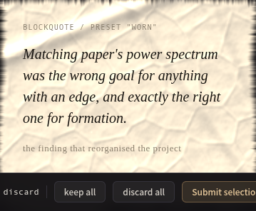
#13 blockquote / preset "worn"359×296 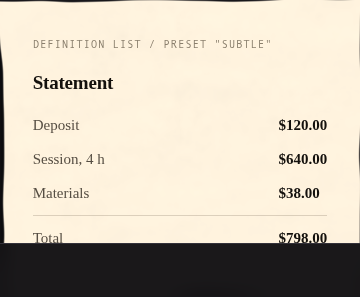
#14 definition list / preset "subtle"359×296 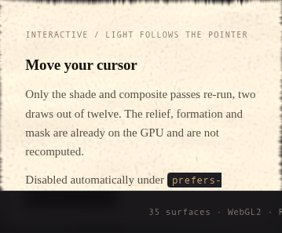
#15 interactive / light follows the pointer359×296 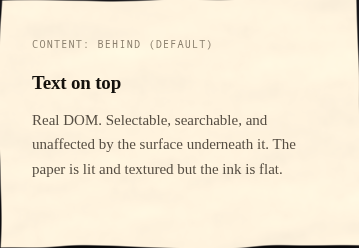
#16 content: behind (default)359×247 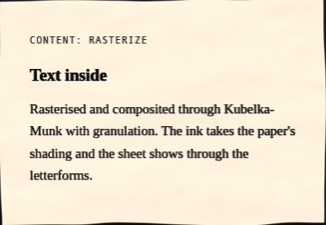
#17 content: rasterize359×247 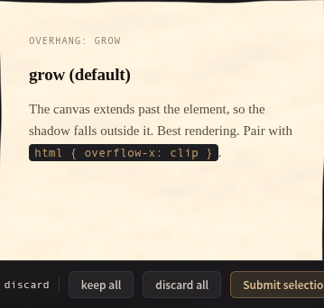
#18 overhang: grow359×341 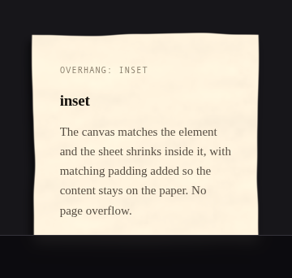
#19 overhang: inset359×341 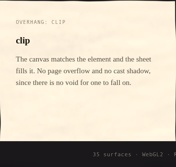
#20 overhang: clip359×341 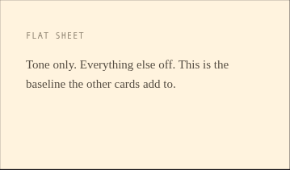
#21 flat sheet359×210 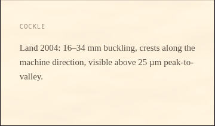
#22 cockle359×210 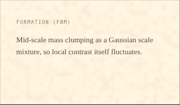
#23 formation (fbm)359×210 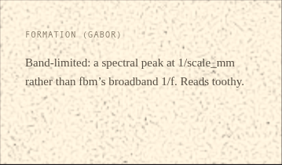
#24 formation (Gabor)359×210 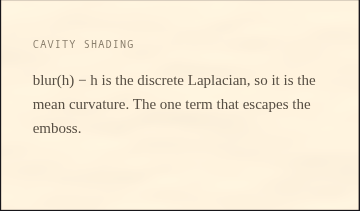
#25 cavity shading359×210 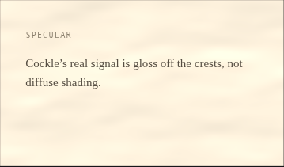
#26 specular359×210 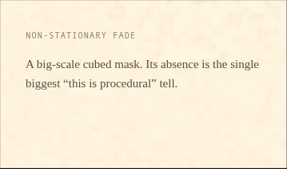
#27 non-stationary fade359×210 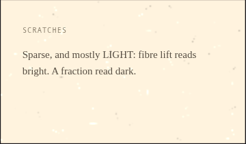
#28 scratches359×210 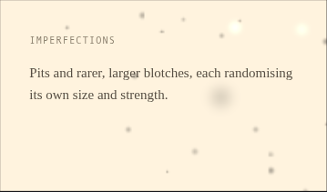
#29 imperfections359×210 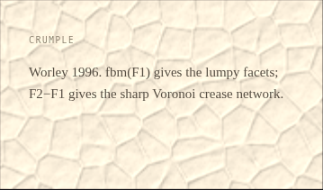
#30 crumple359×210 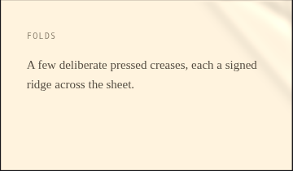
#31 folds359×210 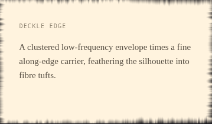
#32 deckle edge359×210 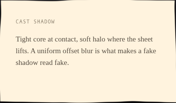
#33 cast shadow359×210 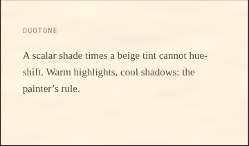
#34 duotone359×210